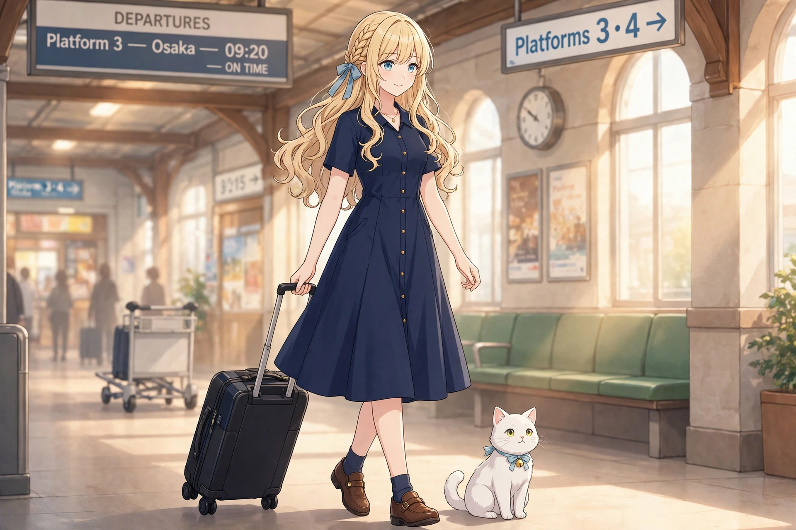

旅行で疲れにくいワンピースの選び方（40代）

ルミ：座りっぱなしの移動でも、シワがつかない素材が大事にゃ。
この記事の商品（先に比較）
| 商品 | 価格（税込） | お店 |
|---|---|---|
| 日本製カシュクールワンピース（膝丈） | 1,980円 | 洋服・小物 なでしこ |
| エンボスVネックワンピース | 2,490円 | coca「コカ」 |
価格は2026年11月24日に商品ページで確認したものです。なでしこのワンピースは送料790円（3,980円以上で送料無料）、cocaのワンピースは送料199円です。セールやクーポンで変わることがあります。
目安1：素材は「シワになりにくい」と書かれているものを選ぶ
旅行のワンピースで一番差が出るのは、素材です。電車や飛行機で座りっぱなしのあと、ホテルで広げたときにシワだらけだと、その日の写真が台無しになります。商品ページに「シワになりにくい」「イージーケア」と書かれているものを選んでください。今回の2点はどちらもシワになりにくい素材です。なでしこのカシュクールワンピースはポリエステル95%・ポリウレタン5%のジャージ素材で、商品ページにも「シワになりにくいから旅行にも便利」と書かれています。cocaのエンボスワンピースも「シワになりにくくイージーケア」と明記され、ストレッチ性のあるポリエステル素材です。綿100%やリネン調のものは風合いは良いですが、シワがつきやすいので、旅行のメインには向きません。
目安2：丈とシルエットは歩きやすさで選ぶ
旅行では、階段の上り下りや、観光地の坂道、駅の乗り換えでよく歩きます。丈は膝丈からミモレ丈が歩きやすく、裾が広がりすぎないAラインなら、歩いたときに裾が足にまとわりつきにくいです。なでしこのワンピースは膝丈のAラインで、ウエストから裾にかけてふんわり広がる形です。cocaのワンピースはロング丈ですが、裾にスリットが入っているので、歩くときに足が出しやすくなっています。丈が長すぎて階段で裾を踏みそうなものや、タイトすぎて歩幅が狭くなるものは、旅行では避けたほうが無難です。試着では、座った姿勢から立ち上がって、3〜4歩歩いてみて、裾の動きを確認してください。
目安3：1枚で着られることと、羽織りと合うこと
旅行先では、朝晩の気温差や、室内の冷房で羽織りものが必要になります。ワンピース単体で着られることはもちろん、カーディガンやジャケットを羽織っても、もたつかないことが大事です。なでしこのワンピースは長袖と七分袖があり、袖がすっきりしているので、上からカーディガンを羽織りやすい形です。cocaのワンピースはノースリーブに近い形で、インナーを変えればロングシーズン使えますが、11月の旅行では上に羽織るものを必ず一緒に持っていってください。羽織りと合わせるときは、ワンピースの色が無地に近いほど、羽織りの色を選びやすくなります。
あえて推さないもの
- シワになりやすい綿100%・リネン素材のワンピース（移動のあとシワが目立ちます）
- 丈が長すぎて階段で裾を踏みそうなもの（転倒の心配もあります）
- タイトすぎて歩幅が狭くなるもの（1日歩くと疲れます）
- 裏地がなく透けやすい薄手のもの（下着のラインが気になります）
旅行の持ち運び方（たたみ方と圧縮）
シワになりにくい素材でも、たたみ方で仕上がりは変わります。ワンピースは、くるくると丸めるのではなく、袖を内側に折ってから、縦に三つ折りにして、最後に軽く丸めるのがおすすめです。圧縮袋に入れるときは、ぎゅうぎゅうに詰め込まず、8割くらいの量にしておくと、取り出したときのシワが少なくなります。ホテルに着いたら、まずハンガーにかけて、浴室の蒸気の近くにしばらく置いておくと、細かいシワが伸びやすくなります。アイロンがない場合でも、ハンガーにかけたまま手で軽く引っ張って形を整えるだけでも、見た目はかなり変わります。
靴とバッグの合わせ方
旅行のワンピースは、靴とバッグで印象が決まります。1日歩く日は、ヒールのない歩きやすい靴が基本です。パンプスなら、かかとが低くて幅が安定しているもの、スニーカーを合わせるなら、白やベージュなどワンピースの色とけんかしない色を選んでください。バッグは、両手が空くショルダータイプか、軽いトートが向いています。重いバッグは肩が凝るだけでなく、姿勢も崩れてワンピースの見え方に響きます。荷物は、財布・スマホ・ハンカチ・羽織りものの4点を目安に、バッグの中を軽く保ってください。
旅行前日のチェック（試着・歩く・座る）
- 家の中で30分着てみて、ウエストや脇の下がきつくないか
- 階段を上り下りして、裾が足にまとわりつかないか
- 椅子に座ってから立ち上がり、座りジワが目立たないか
- 羽織りものを重ねて、袖まわりがもたつかないか
- 鏡の前で後ろ姿も確認する（旅行写真は後ろ姿も写ります）
前日にチェックしておくと、当日は安心して出かけられます。ワンピース1枚で決まる日は、靴とバッグも前日に合わせておくのがおすすめです。
この記事の目安に合う商品
特徴：シワになりにくく、旅行にも使えるワンピース2点。なでしこは日本製のカシュクール、cocaはイージーケアのエンボス素材です。価格は2026年11月24日に商品ページで確認したものです。


あわせて読みたい：ワンピース種類別ガイド／ぽっこりお腹カバー ワンピースの選び方／美しく見える歩き方
NEXT — 次に読むぽっこりお腹カバー ワンピースの選び方（40代）